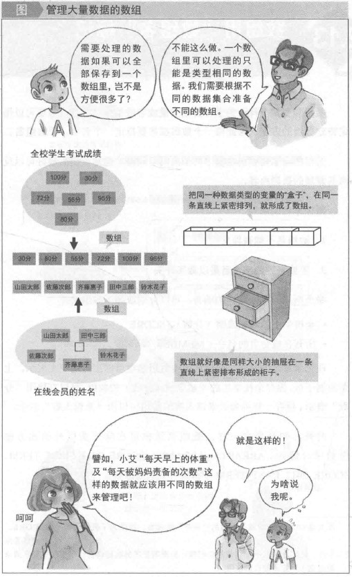
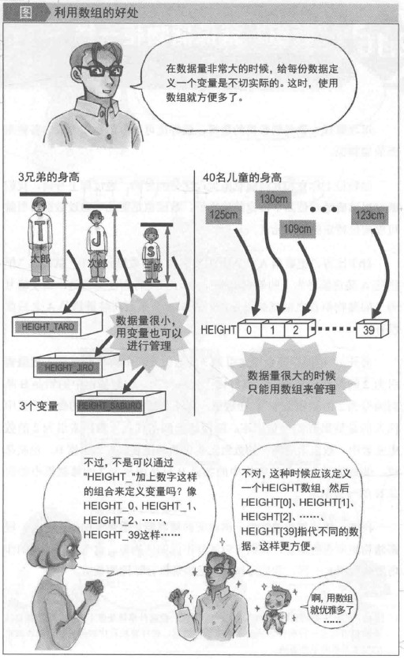
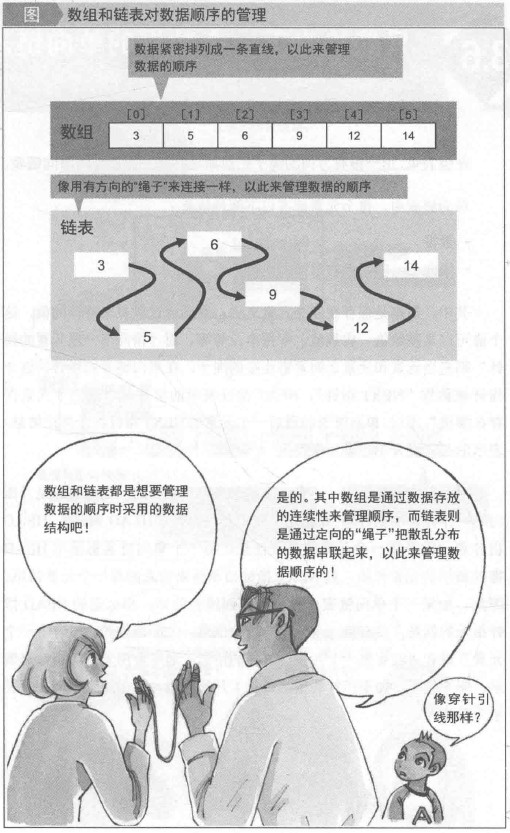
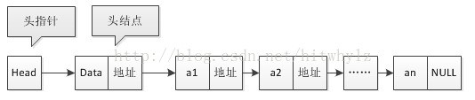
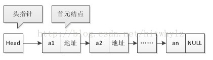
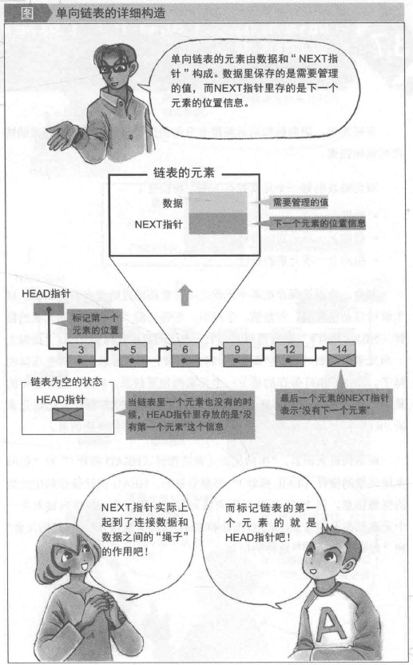
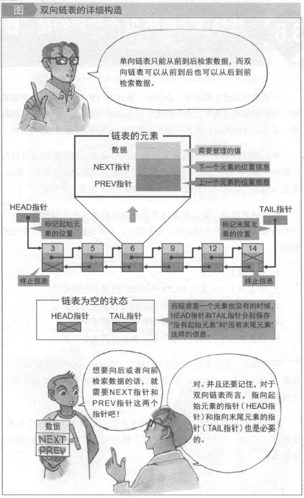
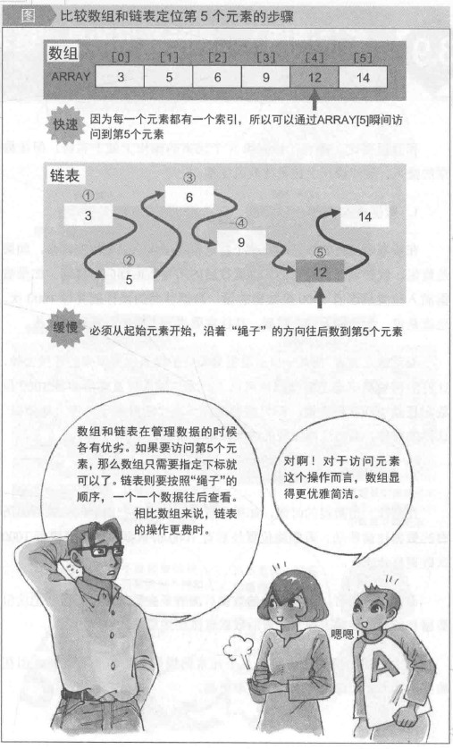
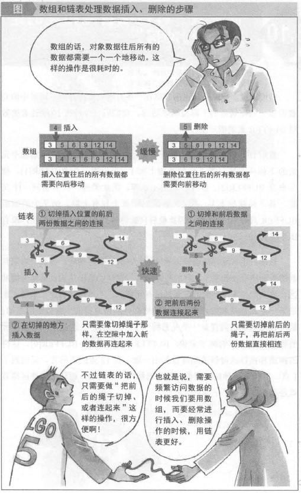

数组
保存大量统一数据类型值的“数组”，顺序排列的几个变量就构成数组。
数组实际上可以看作是同种数据类型的值排列在一条直线上紧密结合而形成的东西。打个比方，数组就好像一个有着许许多多同样大小的抽屉的柜子。排列着变量的数组，其中的变量（所有变量的数据类型都相同）的数据类型就是该数组的数据类型。在创建数组的时候就应该指定数组的数据类型。使用数组的时候，要注意一个原则：“保存到数组里面的所有数据都必须是同类数据。”

数组的优点
- 简单且易用
- 访问元素快（常数时间）

数组的缺点
- 大小固定：数组的大小是静态的（在使用前指定数组的大小）。
- 分配一个连续空间块：数组初始分配空间时，有时无法分配能存储整个数组的内存空间（当数组规模太大时）。
- 基于位置的插入实现复杂：如果要在数组中的给定位置插入元素，可能需要移动存储在数组中的其他元素，这样才能腾出指定的位置来放插入的新元素。如果在数组的开始位置插入元素，那么移动的开销将更大。
Java数组
Python的list
链表
“链表”就像用绳子串起来的长串，把离散的数据串起来。
数组是通过元素紧密排列来管理各元素之间的先后顺序。也就是说，数组通过把存放数据的“盒子”紧密排列来确认各个元素之间的顺序。要是这些“盒子”的位置打乱了，数组中存储的顺序信息也就丢失了。
而链表中各个元素的位子可以自由排列。无论数据的存储位置如何变更，链表也可以正确管理各个数据的顺序。这正是因为链表用一种像绳子一样的机制把各个数据自由、可伸缩、定向地串联了起来。即使数据的位置发生了变动，也可以沿着绳子找到下一份数据。链表用这种与数据存储位置无关的方法来管理数据之间的顺序。

头指针和头结点
链表中第一个结点的存储位置叫做头指针，那么整个链表的存取就必须是从头指针开始进行了。之后的每一个结点，其实就是上一个的后继指针指向的位置。
有头结点的链表：

无头结点的链表：

头结点：
- 头结点是为了操作的统一与方便而设立的，放在第一个元素结点之前，其数据域一般无意义（当然有些情况下也可存放链表的长度、用做监视哨等等）。
- 有了头结点后，对在第一个元素结点前插入结点和删除第一个结点，其操作与对其它结点的操作统一了。
- 首元结点也就是第一个元素的结点，它是头结点后边的第一个结点。
- 头结点不是链表所必需的。
头指针：
- 在线性表的链式存储结构中，头指针是指链表指向第一个结点的指针，若链表有头结点，则头指针就是指向链表头结点的指针。
- 头指针具有标识作用，故常用头指针冠以链表的名字。
- 无论链表是否为空，头指针均不为空。头指针是链表的必要元素。
使用头结点的优点
- 由于开始结点的位置被存放在头结点的指针域中,所以在链表的第一个位置上的操作就和在表的其它位置上操作一致,无须进行特殊处理;
- 无论链表是否为空，其头指针都是指向头结点的非空指针（空表中头结点的指针域空），因此空表和非空表的处理也就统一了。
- 方便在第1个位置进行插入、删除操作时，同其他位置一样。
- 加了头结点之后，插入、删除都是在后继指针next上进行操作，不用动头指针；若不加头结点的话，在第1个位置插入或者删除第1个元素时，需要动的是头指针。
单向链表
只能单向检索下一个数据的链表。
单向列表中，每个元素都有以下两种信息（属性）：
- 数据
- 指向下一项元素的指针

链表的类型声明：1
2
3
4
5
6
7
8
9
10
11
12
13
14
15
16
17
18
19
20
21
22
23
24
25
26
27
28
29class Node {
private Object data; //数据域
private Node next; // 指针域
public Node(Node next) {
this.next = next;
}
public Node(Object data, Node next) {
this.data = data;
this.next = next;
}
public Object getData() {
return data;
}
public void setData(Object data) {
this.data = data;
}
public Node getNext() {
return next;
}
public void setNext(Node next) {
this.next = next;
}
}
链表基本操作
- 链表的初始化构造
- 遍历和删除链表
- 在链表中增加一个元素
- 链表开始处
- 链表结尾处
- 链表中间
- 在链表中删除一个元素
- 链表开始处
- 链表结尾处
- 链表中间
- 修改指定位置的链表数据
- 查找链表中的数据
代码示例
1 | // 线性表接口 |
开发可用的链表
对于链表实现，Node类是整个操作的关键，但是首先来研究一下之前程序的问题：Node是一个单独的类，那么这样的类是可以被用户直接使用的，但是这个类由用户直接去使用，没有任何的意义，即：Node这个类有用，但是不能让用户去用，只能让LinkList类去调用，内部类Node中完成。
于是，我们需要把Node类定义为内部类，并且在Node类中去完成addNode和delNote等操作。使用内部类的最大好处是可以和外部类进行私有操作的互相访问。
注：内部类访问的特点是：内部类可以直接访问外部类的成员，包括私有；外部类要访问内部类的成员，必须先创建对象。1
2
3
4
5
6
7
8
9
10
11
12
13
14
15
16
17
18
19
20
21
22
23
24
25
26
27
28
29
30
31
32
33
34
35
36
37
38
39
40
41
42
43
44
45
46
47
48
49
50
51
52
53
54
55
56
57
58
59
60
61
62
63
64
65
66
67
68
69
70
71
72
73
74
75
76
77
78
79
80
81
82
83
84
85
86
87
88
89
90
91
92
93
94
95
96
97
98
99
100
101
102
103
104
105
106
107
108
109
110
111
112
113
114
115
116
117
118
119
120
121
122
123
124
125
126
127
128
129
130
131
132
133
134
135
136
137
138
139
140
141
142
143
144
145
146
147
148
149
150
151
152
153
154
155
156
157
158
159
160
161
162
163
164
165
166
167
168
169
170
171
172
173
174
175
176
177
178
179
180
181
182
183
184
185
186
187
188class LinkList {
private Node root; //定义一个根节点
private int size;
private int foot = 0; // 操作返回数组的脚标
private String[] retData; // 返回数组
// private boolean changeFlag = true;
//添加数据
public boolean add(Object data) {
if (data == null) { // 如果添加的是一个空数据，那增加失败
return false;
}
// 将数据封装为节点，目的：节点有next可以处理关系
Node newNode = new Node(data);
// 链表的关键就在于根节点
if (root == null) { //如果根节点是空的，那么新添加的节点就是根节点。(第一次调用add方法时，根节点当然是空的了)
root = newNode;
} else {
root.addNode(newNode);
}
this.size++;
return true;
}
//方法：增加一组数据
public boolean addAll(String data[]) { // 一组数据
for (int x = 0; x < data.length; x++) {
if (!this.add(data[x])) { // 只要有一次添加不成功，那就是添加失败
return false;
}
}
return true;
}
//方法：删除数据
public boolean remove(String data) { //要删除的节点，假设每个节点的data都不一样
if (!this.contains(data)) { //要删除的数据不存在
return false;
}
if (root != null) {
if (root.data.equals(data)) { //说明根节点就是需要删除的节点
root = root.next; //让根节点的下一个节点成为根节点，自然就把根节点顶掉了嘛（不像数组那样，要将后面的数据在内存中整体挪一位）
} else { //否则
root.removeNode(data);
}
}
size--;
return true;
}
//输出所有节点
public void print() {
if (root != null) {
System.out.print(root.data);
root.printNode();
System.out.println();
}
}
//方法：获取全部数据
public String[] toArray() {
if (this.size == 0) {
return null; // 没有数据
}
this.foot = 0; // 清零
this.retData = new String[this.size]; // 开辟数组大小
this.root.toArrayNode();
return this.retData;
}
//获取数据的长度
public int size() {
return this.size;
}
//判断是否为空链表
public boolean isEmpty() {
return this.size == 0;
}
//清空链表
public void clear() {
this.root = null;
this.size = 0;
}
//查询数据是否存在
public boolean contains(Object data) { // 查找数据
// 根节点没有数据，查找的也没有数据
if (this.root == null || data == null) {
return false; // 不需要进行查找了
}
return this.root.containsNode(data); // 交给Node类处理
}
//方法：根据索引取得数据
public Object get(int index) {
if (index > this.size) { // 超过个数
return null; // 返回null
}
this.foot = 0; // 操作foot来定义脚标
return this.root.getNode(index);
}
private class Node {
private Object data; // 保存的数据
private Node next; // 下一个节点对象
public Node(Object obj) {
this.data = obj;
}
// 添加节点
public void addNode(Node newNode) {
if (this.next == null) {
this.next = newNode;
} else {
this.next.addNode(newNode);
}
}
// 判断节点是否存在
public boolean containsNode(Object obj) {
if (data.equals(this.data)) { // 与当前节点数据吻合
return true;
} else { // 与当前节点数据不吻合
if (this.next != null) { // 还有下一个节点
return this.next.containsNode(data);
} else { // 没有后续节点
return false; // 查找不到
}
}
}
//删除节点
public void removeNode(Object data) {
if (this.next != null) {
if (this.next.data.equals(data)) {
this.next = this.next.next;
} else {
this.next.removeNode(data);
}
}
}
//输出所有节点
public void printNode() {
if (this.next != null) {
System.out.print("-->" + this.next.data);
this.next.printNode();
}
}
//获取全部数据
public void toArrayNode() {
LinkList.this.retData[LinkList.this.foot++] = (String) this.data;
if (this.next != null) {
this.next.toArrayNode();
}
}
//根据索引位置获取数据
public Object getNode(int index) {
if (LinkList.this.foot++ == index) { // 当前索引为查找数值
return this.data;
} else {
return this.next.getNode(index);
}
}
}
}
双向链表
能检索上一个或者下一个数据的链表叫做双向链表。
双链表的主要优点是对于任意给的结点，都可以很轻易的获取其前驱结点或者后继结点，而主要缺点是每个结点需要添加额外的next域，因此需要更多的空间开销，同时结点的插入与删除操作也将更加耗时，因为需要更多的指针指向操作。
双向链表的每一个元素都有下面三种信息：
- 数据
- 指向下一项元素的指针
- 指向上一项元素的指针

双向链表的类型声明1
2
3
4
5
6
7
8
9
10
11// 如果使用内部类，内置的属性没有进行封装，对象可以直接访问属性，就没有get和set方法。
class DLLnode {
private Object obj; //数据
private DLLnode previous; //前驱节点
private DLLnode next; //下个节点
DLLnode(Object obj) {
this.obj = obj;
}
// get 和 set方法
}
代码示例
1 | class DLLinkedList { |
循环链表
构成一个循环的链表结构，即结点的next指针指向头节点。
优点
从循环链表中的任何一个结点出发都能找到任何其他结点。使用起来更加灵活。比如说，我们现在的链表，查找第一个结点，只需要 O(1) 的时间，查找最后一个结点需要 O(n) 的时间。
单向的循环链表节点类型与单向链表结构一致
代码示例
1 | class CLLinkedList { |
数组与链表的对比(用法)
能快速定位第N个数据的是“数组”。

能快速插入、删除数据的是“链表”。

时间复杂度比较
| 参数 | 链表 | 数组 |
|---|---|---|
| 索引 | $O(N)$ | $O(1)$ |
| 在最前端插入/删除 | $O(1)$ | $O(N)$ |
| 在最末端插入/删除 | $O(N)$ | $O(1)$ |
| 在中间插入/删除 | $O(N)$ | $O(N)$ |
| 空间浪费 | $O(N)$ | 0 |